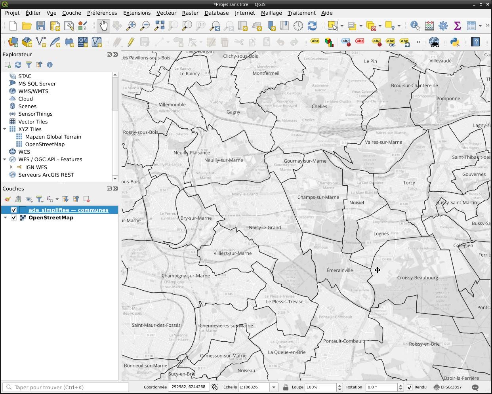

Introduction à QGIS
Nous allons créer sans attendre notre première carte : un fond de plan cartographique centré sur la CA Paris Vallée de la Marne, sur lequel nous allons superposer des couches vectorielles de description administrative du territoire.
Création du projet
Lancer QGIS, créer un nouveau projet.
- Projet → Nouveau
Ajout d’un fond de carte
Ajouter le fond de carte OpenStreetMap.
- Couche → Ajouter une couche → Ajouter une couche XYZ
- Connexions XYZ → OpenStreetMap
- Ajouter
Dans le coin inférieur droit, remarquez qu’un SCR a été automatiquement défini : EPSG:3857. C’est celui de la première couche ajoutée. Si nous devions ajouter des couches exprimées dans un autre SCR, QGIS ferait la conversion de manière transparente, à condition qu’il puisse déterminer sans ambiguité le SCR de la couche fournie.
SCR, Késako ?
Un système de coordonnées de référence est le référentiel qui donne du sens aux valeurs numériques que prennent des coordonnées géographiques (latitude, longitude, altitude). On pourra se référer utilement à la documentation. de QGIS.Ajout d’une première couche vectorielle
Télécharger la géodatabase préparée spécialement pour ce TP. Elle contient quelques données issues de la base AdminExpress de l’IGN.
Géodatabase, ESRI Shapefile ?
Plusieurs formats existent pour stocker de l’information géographique. QGIS travaille par défaut avec des géodatabases. Vous trouverez souvent des fichiers au format ESRI Shapefile. On retiendra qu’une géodatabase (extensiongpkg) est capable de stocker plusieurs couches dans un même fichier, alors que le format ESRI Shapefile (extension principale shp) crée six différents fichiers pour stocker l’information d’une seule couche vectorielle. Pour les détails techniques, se référer à la documentation.
Ajouter la couche communes contenue dans la Géodatabase.
- Couche → Ajouter une couche → Ajouter une couche vecteur
- Source → Jeux de données vectorielles
- Aller chercher le ficher
ade_simplifie.gpkg - Dans la fenêtre qui s’affiche, sélectionner la couche
commune
On va modifier la symbologie de la couche pour ne conserver que les contours de chaque objet, sans ce vilain fond opaque, puis ajouter des étiquettes donnant le nom de la commune (on pourra personnaliser la police et le corps).
Avec la couche sélectionnée :
- Couche → Propriétés de la couche
- Symbologie → Remplissage simple → Style de remplissage → Pas de remplissage
- Étiquettes → Étiquettes simples → Valeur →
nom_officiel
Transparence du fond de plan
Pour mieux voir nos entités vectorielles, on peut rendre le fond de plan transparent et le passer en niveau de gris.
Avec la couche sélectionnée :
- Couche → Propriétés de la couche
- Transparence → Opacité globale → 50%
- Symbologie → Rendu de couche → Niveaux de gris → [Par clarté]

Exploration des données
À chaque objet de la couche communes correspondent des données. On peut les afficher pour un objet donné avec l’outil Identifier des données accessible par la barre d’outils. Pour les communes, un champ important est le code_insee. C’est lui qui identifie la commune de manière unique, on en aura besoin ultérieurement.
De l’importance des métadonnées
Même si les intitulés des champs sont ici clairs, il est de bonne pratique de toujours consulter les métadonnées d’une source de données pour s’assurer d’avoir bien tout compris. Dans le cas présent, on ira voir sur le site de l’IGN, à la page ADMIN Express.Une autre manière d’explorer la couche est d’afficher sa table d’attributs (F6).
- Couche → Ouvrir la table d’attributs
Sélection manuelle de données
On peut sélectionner manuellement une ou plusieurs entités à l’aide de l’outil de la barre des tâches.
Noter dans le menu déroulant les modes de sélections possibles: rectangle de sélection, polygone, main levée, par rayon.
Noter les raccourcis-claviers utiles. Pour ajouter des objets à la sélection courante, maintenir SHIFT. Pour retrancher des objets à la sélection courante, maintenir CTRL.
Sélectionner les trois communes de Champs-sur-Marne, Noisiel et Émerainville.
Statistiques descriptives
On peut calculer aisément certains agrégats (moyenne, médiane, etc.) sur les attributs des entités sélectionnés.
- Vue → Résumé statistique
Quelle est la population totale de ces trois communes ?
50 124 habitants (au 1er janvier 2022).Quelle est la superficie cadastrale totale de ces trois communes ?
1 710 hectares.Premiers calculs géométriques
Un SIG est capable de calculer la superficie de chaque polygone. On va vérifier que la superficie calculée est cohérente avec la superficie cadastrale renseignée dans la table attributaire.
Ouvrir la table d’attributs (F6), puis la calculatrice de champs (bouton en forme de boulier dans la barre d’outils, également CTRL+I).
Dans la fenêtre qui s’ouvre : * Indiquer le nom du champ à créer (on peut l’appeler superficie) * Sélectionner la case champ virtuel (ie. le champ ne sera pas persistent) * Indiquer le type du champ (entier) * Renseigner la formule pour calculer le champ : area(@geometry) * Valider
Quelle sera l’unité du champ superficie ?
Il dépend bien sûr de l’unité employée par le SCR de la carte. Pour le nôtre, c’est le mètre. Le champ superficie sera donc exprimé en mètres-carrés. On pourra diviser par 10000 pour le convertir en hectares.
Le champ superficie figure bien désormais dans la table attributaire. On peut calculer la superficie des trois communes de la même manière qu’on a calculé celle de la population.
Quelle est la superficie calculée totale de ces trois communes ?
1 737,29 ha. L’écart est de 17,29 ha avec la superficie cadastrale, marge <1%.On peut également utiliser l’outil de mesure de longueur (CTRL+ALT+M) ou d’aires (CTRL+ALT+J) pour des calculs ponctuels sur la carte.
Affichage par catégories
On va désormais colorer les communes différemment en fonction de l’EPCI auquel elles appartiennent.
- Couche → Propriétés de la couche → Symbologie → [catégorisé]
- Valeur → [codes_siren_des_epci]
- Symboles → Remplissage simple → Style de remplissage → [continue]
- Bouton Classer
- Bouton Appliquer
On voit nettement se dessiner les 7 EPCI présents dans la base.
Millefeuille administratif ?
Vous noterez dans la légende que le champcodes_siren_des_epci contient parfois deux numéros SIREN : certaines communes appartient bien à deux EPCI en même temps (Métropole du Grand Paris + EPT).
Sélection avancée de données
On va désormais sélectionner toutes les communes appartenant à la CA Paris Vallée de la Marne en testant deux méthodes.
Sélection par attributs
On peut sélectionner l’ensemble des entités de la couche des communes dont le champ code_siren_des_epci contient la valeur 200057958 grâce à la sélection par expression (CTRL+F3)
- Éditer → Sélection → Sélectionner des entités à l’aide d’une sélection
- Expression → [“codes_siren_des_epci” = ‘200057958’]
Sélection par géométrie
On peut aussi sélectionner l’ensemble des entités de la couche des communes qui sont situées à l’intérieur du polygone représentant la CA Paris Vallée de la Marne dans la couche des EPCI.
Pour cela, on va ajouter la couche vectorielle des EPCI qui figure dans la même géodatabase que la couche des communes et lui appliquer le style qui convient. Pour cela, se référer au début du TD.
Sélectionner ensuite le polygone représentant la CA Paris Vallée de la Marne.
- Vecteur → Outils de recherche → Sélection par localisation
- Sélectionner les entités depuis →
ade_simplifiee - communes - Où les entités →
est à l'intérieur - En comparant les entité de →
ade_simplifiee - epci - cocher la case
entités sélectionnées uniquement
Export vers une nouvelle couche
Créons maintenant un couche contenant uniquement les 12 communes de la CA Paris Vallée de la Marne. On sauvegardera cette couche dans notre géodatabase initiale.
- Panneau des couches → clic-droit couche
communes - Exporter → Sauvegarder les entités sélectionnées sous
Jointure attributaire
Représentons désormais les différences de population entre les communes.
On serait tenté de faire varier les couleurs des polygones du plus clair au plus foncé : les géomaticiens appellent ces cartes des cartes teintées, ou cartes choroplèthes. Mais pas de choroplèthes avec des données stock… on fera donc varier la taille de points représentant les communes.
Dans la géodatabase initiale, charger la couche chef_lieu_de_commune. Elle contient un semis de points, un pour chaque chef-lieu (c’est-à-dire la mairie).
Ouvrir la table attributaire : constater qu’il y a bien un champ code_insee_de_la_commune, mais pas (encore) de champ population… Qu’à cela ne tienne : on va l’ajouter, en joignant la table des chefs-lieux des communes à celle des communes.
Avec la couche des chefs-lieux sélectionnés :
- Couche → Propriétés de la couche → Jointures
- Cliquer le bouton +
- Joindre la couche →
ade_simplifiee - communes,ade_simplifie - Champ de jointure →
code_insee - Champ dans la couche cible →
code_insee_de_la_commune - Champs joints →
population
Affichage gradué
On peut désormais modifier la symbologie et faire varier la taille des points en fonction de la valeur du champ population.
- Couche → Propriétés de la couche → Symbologie
- Sélectionner
gradué - Valeur →
xxx_population - Méthode → Taille
- Mode → intervalle égal
Discrétisation
On comprend bien que le choix des seuils, du nombre de catégories, etc. est stratégique, et qu’on peut faire dire à des mêmes données des choses très différentes selon les choix opérés…Mise en page et export
Exportons notre carte en PDF. Il faut pour cela créer une mise en page.
- Projet → Nouvelle mise en page
Dans la fenêtre qui s’ouvre : * Insérer un bloc carte * Insérer un bloc de texte pour le titre * Insérer un bloc légende * Insérer une échelle graphique * Insérer une flèche indiquant le nord * …
Une fois tous les paramètres ajustés, exporter la carte en PDF.